查看附近或其他區域的浪浪紀錄，理解目擊位置與分布。
公益 APP · INTRODUCTION
浪浪地圖
每一次看見，都可能成為下一次救援的線索。
在地圖上記錄世界各地的流浪動物目擊資訊，透過照片、文字與持續更新，讓關心牠們的人更容易接續行動。
把功能留在
真正需要的時刻。
在地圖上記錄世界各地的流浪動物目擊資訊，透過照片、文字與持續更新，讓關心牠們的人更容易接續行動。
用照片、位置與文字留下當下資訊，提供後續關注的重要脈絡。
透過留言與新紀錄補充近況，避免資訊停留在第一次目擊。
讓居民、志工與關心動物的人共享線索，更容易找到下一步行動。
完整商店
宣傳圖集。
依照商店目前提供的宣傳素材完整排列；圖片維持原始比例，在手機上會自動換行，不再裁切主要畫面。
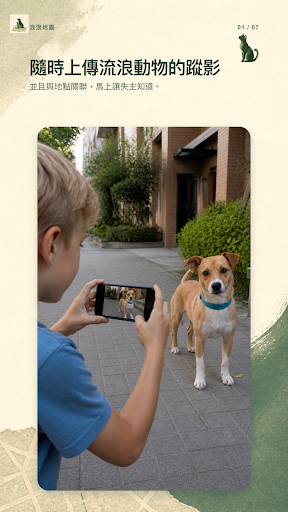
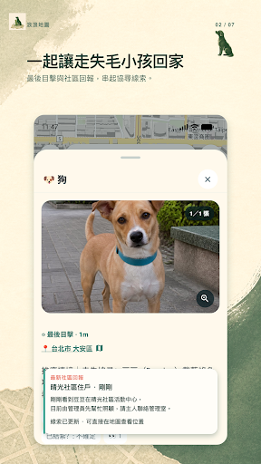
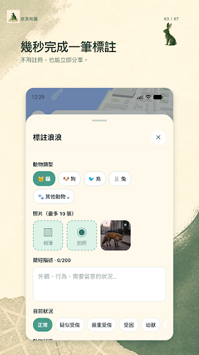
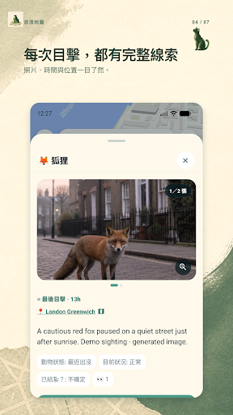
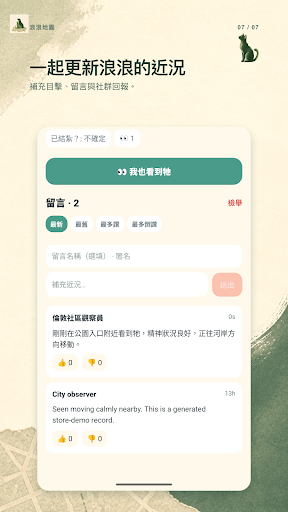
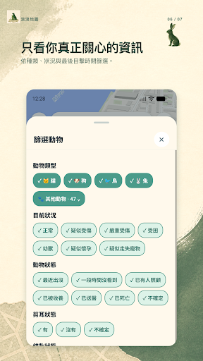
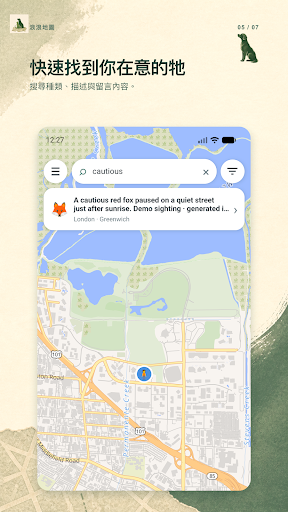
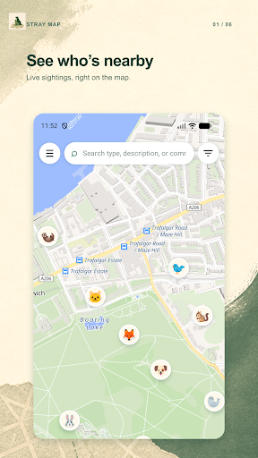
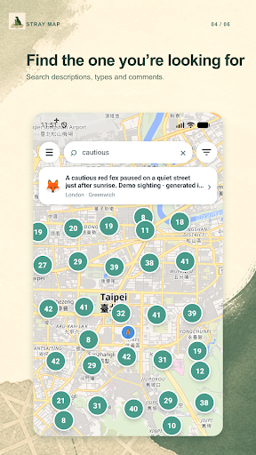
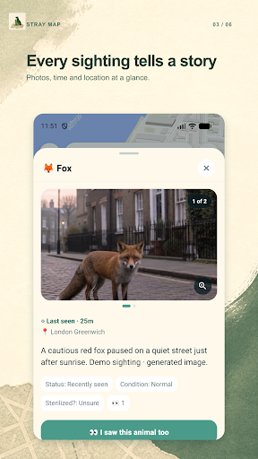
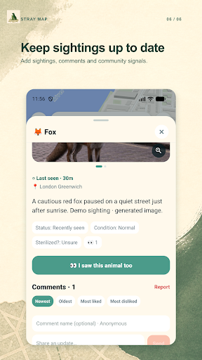
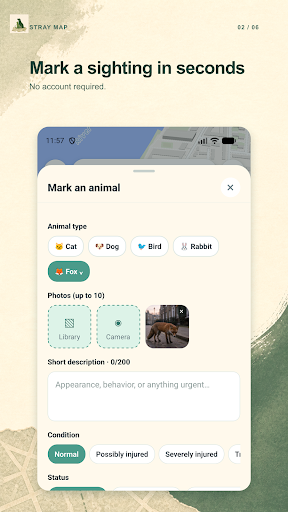
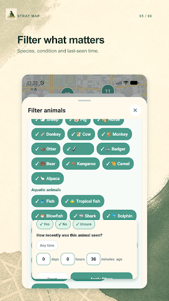
使用以前，
值得知道。
這些提醒協助你理解資料界線、平台狀態與合適的使用方式。
安全優先
不要追趕、包圍或徒手接觸緊張的動物；必要時聯絡當地專業單位。
保護位置
敏感個案與可能遭傷害的動物，請審慎公開精確位置。
平台狀態
Google Play 已提供下載，iOS 版本仍在 Apple 審查中。